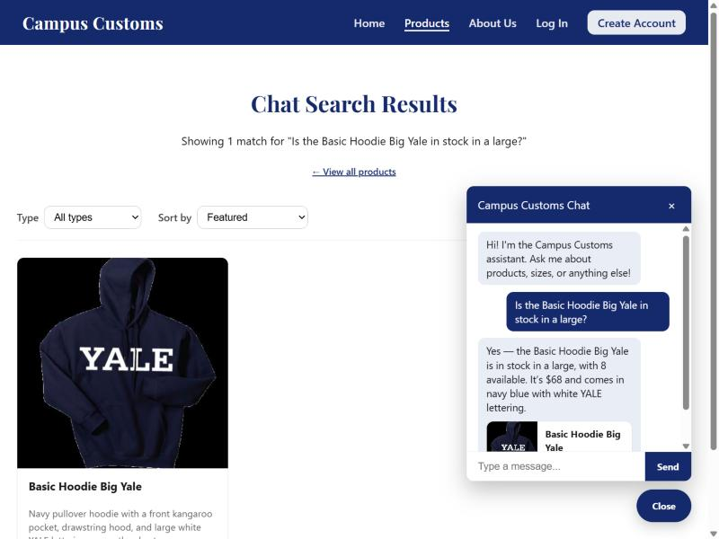
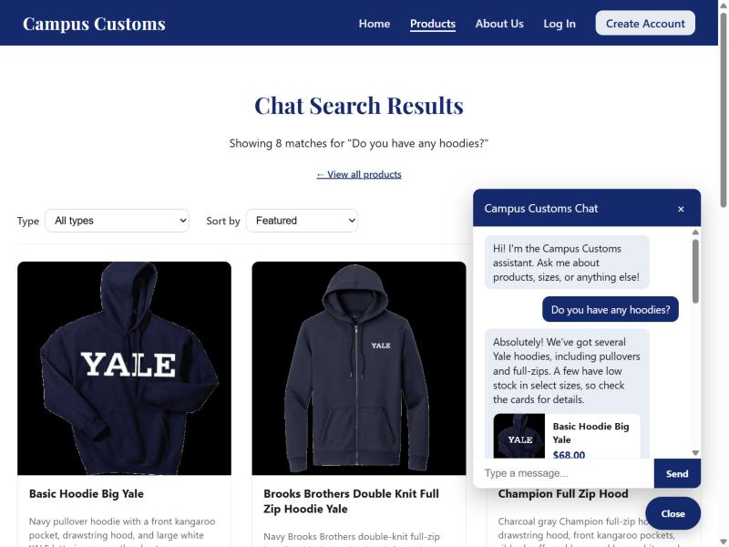
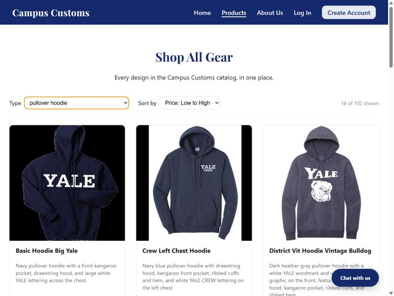

Chat checks real inventory from the database

Asked the chatbot "Is the Basic Hoodie Big Yale in stock in a large?" — it replied "8 available,"
which matches the actual quantity for that product/size in campus_customs.db, confirming
the agent is reading real inventory data rather than guessing.
Dynamic search-result cards after a category question

Asked the chatbot "Do you have any hoodies?" from the Home page — it searched the catalogue and the site automatically navigated to the Products page, showing "Chat Search Results" with 8 real, clickable hoodie cards (image, name, price) generated from the agent's structured reply.
Usability feature: Products page filter + sort

Using the toolbar added in Problem 9, filtering by "pullover hoodie" and sorting by price narrows the full 102-item catalogue down to 18 matching products (shown in the "18 of 102 shown" counter) — letting a shopper browse without needing to go through the chatbot.